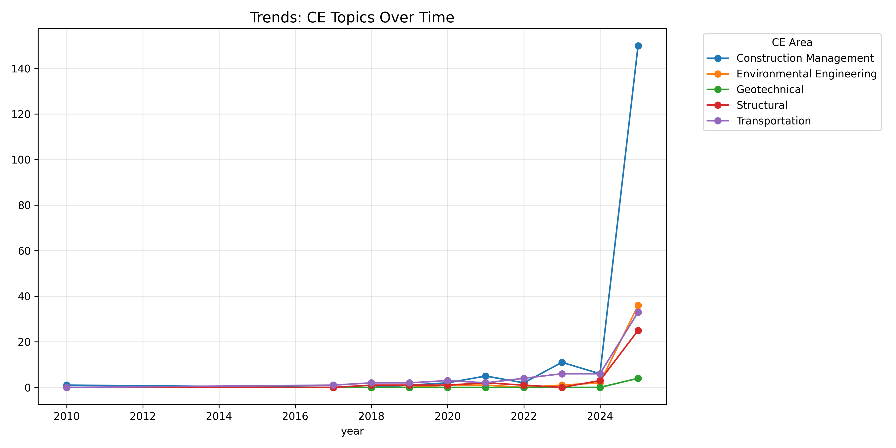
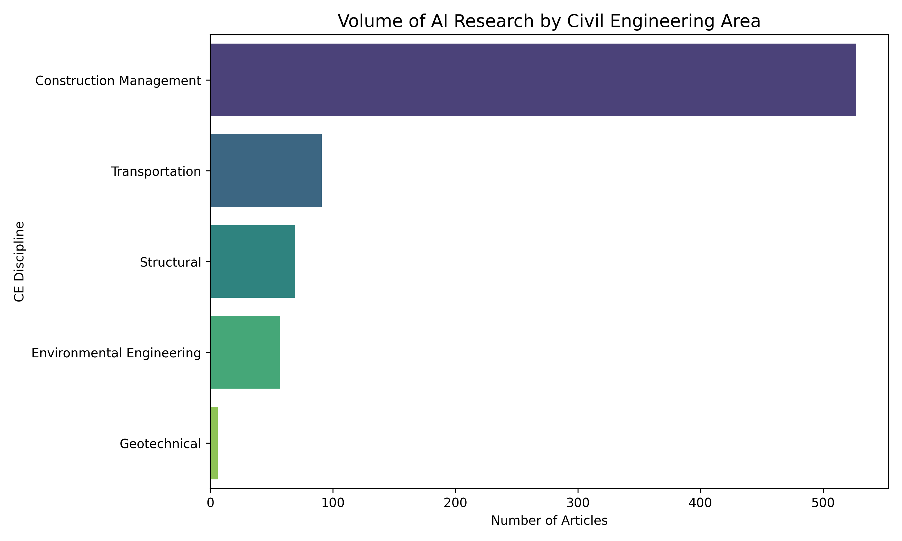
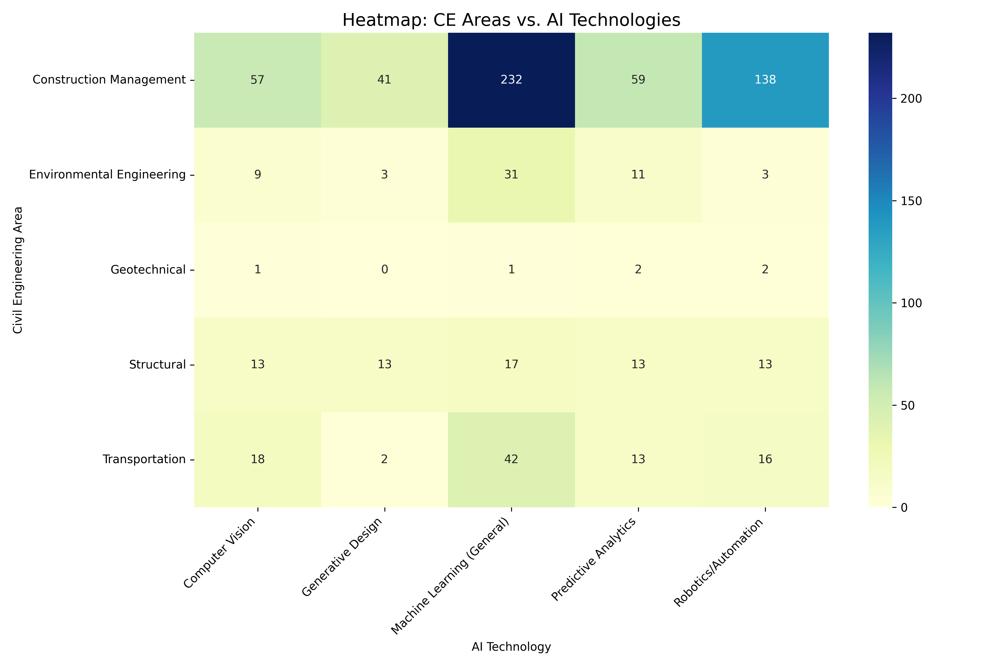
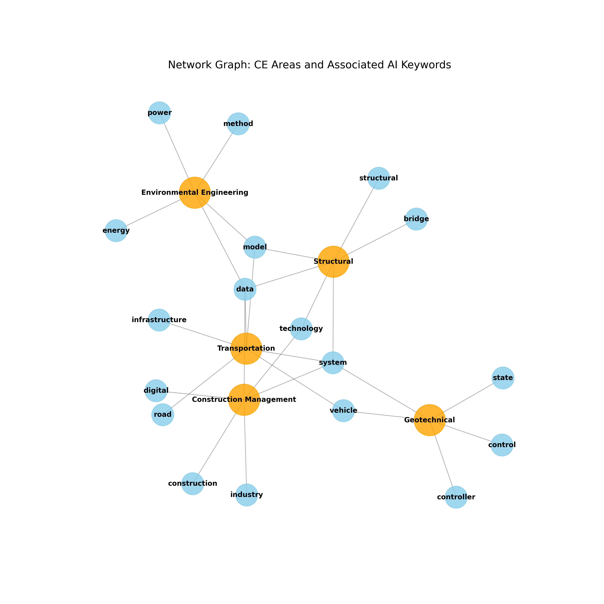
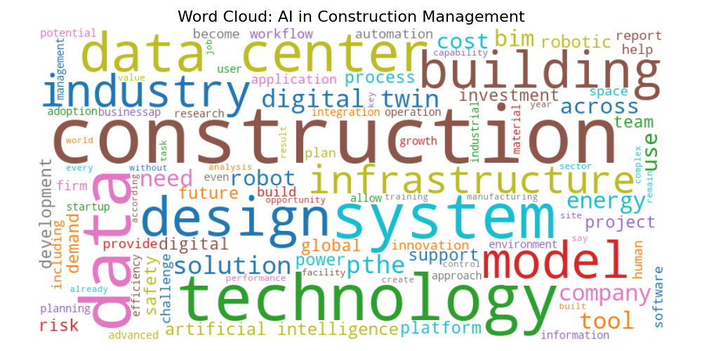
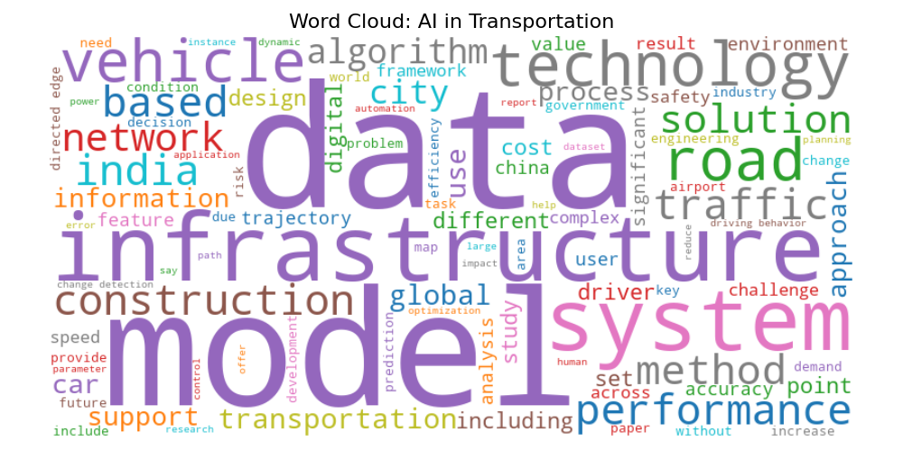
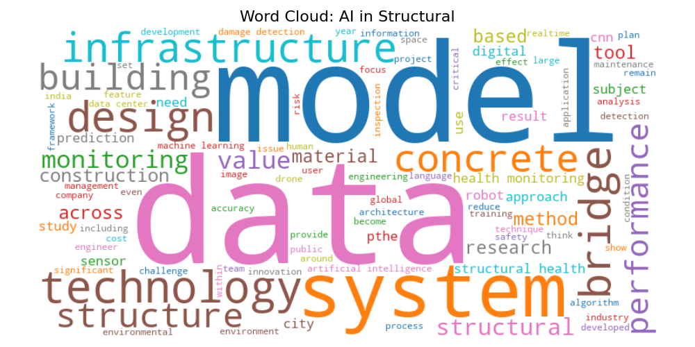
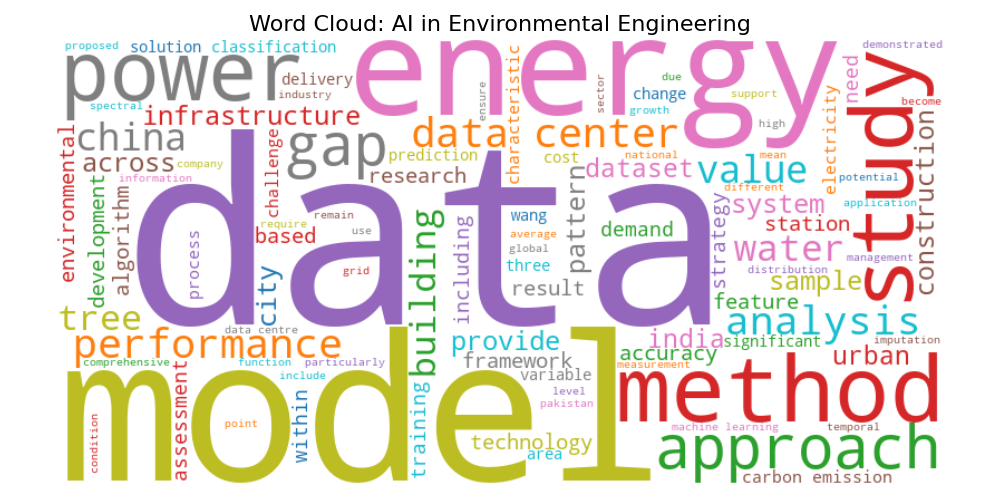
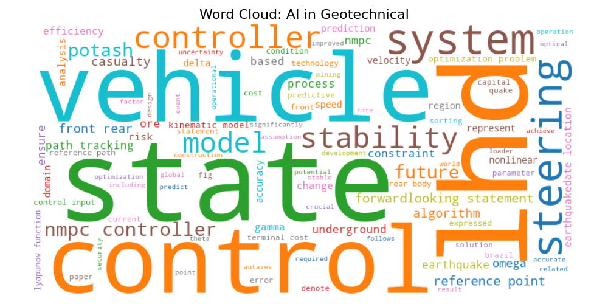

Boğaziçi University
Fall 2025
Dr. Eyuphan Koc
Team Members: - Hakan ARMAN - İbrahim ÇAYIR
Date: December 11, 2025
This report presents a comprehensive analysis of Artificial Intelligence (AI) adoption across Civil Engineering sub-disciplines, based on the examination of 750 curated articles from industry news, academic publications, and technical blogs. The study employs Natural Language Processing (NLP) techniques and dictionary-based classification to quantify AI integration trends.
Construction Management is the undisputed leader in AI adoption, representing 70.27% (527 articles) of all AI-related content in Civil Engineering. This dominance reflects the discipline's focus on digital transformation, site monitoring, safety systems, and project optimization.
The analysis reveals that Computer Vision and Predictive Analytics are the most frequently deployed AI technologies in construction safety and site monitoring applications, driving Construction Management's leadership position. Transportation follows as a strong second, primarily driven by autonomous vehicle infrastructure and smart highway systems.
Our data collection employed a multi-source, multi-method approach to ensure comprehensive coverage of both industry practice and academic research:
1. RSS Feeds (Primary Source): - Industry News Portals: Engineering News-Record (ENR), Construction Dive, BIMplus, New Civil Engineer, Civil + Structural Engineer Media - Technology-Focused Feeds: AEC Magazine, Stack Construction Tech, PlanGrid/Autodesk Blog - Google News RSS: Custom queries combining Civil Engineering and AI terms - Professional Blogs: Trimble, Autodesk, Bentley Systems, Revit-related feeds
2. Scientific Publications: - arXiv API: 200 academic papers from computer science categories (cs.AI, cs.CV, cs.LG) with Civil Engineering applications - Focus on: structural health monitoring, digital twins, computer vision, predictive maintenance
3. Web Scraping & APIs: - Google News Aggregator: Python library for targeted searches - Newspaper3k: Automated article text extraction - Combined keyword searches (50+ unique query combinations)
We systematically combined Civil Engineering terms with AI technologies:
CE Terms: Construction, Structural, Geotechnical, Transportation, Infrastructure, Concrete, Bridge, Tunnel
AI Terms: Artificial Intelligence, Machine Learning, Computer Vision, Generative AI, Neural Networks, Robotics, Automation, Predictive Analytics
Example Queries: - "Construction Management Artificial Intelligence" - "Computer Vision Construction Safety" - "Structural Health Monitoring Machine Learning" - "BIM Digital Twins AI Integration" - "Geotechnical Engineering Machine Learning"
All articles stored in SQLite database (corpus.db) with the following schema:
- Title
- Publication Date
- Source/Publisher
- URL
- Full Text Content
- Search Keywords Used
- Category Tag (RSS/Blog/Scientific)
We implemented a comprehensive NLP preprocessing pipeline using NLTK (Natural Language Toolkit):
1. Tokenization: - Sentence and word tokenization using NLTK's Punkt tokenizer - Preserved document structure while splitting into analyzable units
2. Normalization: - Converted all text to lowercase - Removed URLs using regex patterns - Removed HTML/XML artifacts (e.g., "href", "target", "class") - Removed punctuation and special characters - Eliminated scraper artifacts (e.g., "subscribe", "click here", "noreferrer")
3. Stopword Removal: - Standard English stopwords (NLTK corpus) - Domain-specific noise words: - Generic: "said", "also", "would", "could", "using", "made" - Web artifacts: "div", "span", "href", "http", "https", "url" - Temporal: month names, "ago", "hour", "minute"
4. Lemmatization: - Applied WordNetLemmatizer to reduce words to root forms - Example: "buildings" → "building", "analyzing" → "analyze" - Ensured consistent frequency counts across morphological variations
5. Feature Extraction: - N-grams: Identified 2-word and 3-word phrases using CountVectorizer - TF-IDF: Calculated Term Frequency-Inverse Document Frequency scores - Used scikit-learn's TfidfVectorizer (max_features=1000) for document-specific keyword identification
Beyond rule-based preprocessing, we employed Google Gemini 3 Flash API for semantic validation: - Relevance auditing to ensure CE+AI intersection - Semantic deduplication (identifying similar articles with different URLs) - Topic assignment validation - Removed ~20% of articles that failed relevance checks
We developed comprehensive keyword dictionaries for both Civil Engineering areas and AI technologies:
Civil Engineering Areas:
Keywords: structural, bridge, beam, column, slab, truss, seismic design, structural health monitoring (SHM), finite element, stress analysis, retrofit
Geotechnical Engineering:
Keywords: geotechnical, soil mechanics, foundation, piling, excavation, tunneling, TBM, slope stability, retaining wall, liquefaction
Transportation Engineering:
Keywords: transportation, traffic engineering, highway, pavement, roadway, railway, autonomous vehicle, logistics, airport, smart infrastructure
Construction Management:
Keywords: construction management, project management, scheduling, cost estimation, safety, OSHA, PPE, site monitoring, BIM, digital twin, lean construction
Environmental Engineering:
AI Technologies:
Keywords: computer vision, image recognition, drone, camera, video analysis, object detection, inspection
Predictive Analytics:
Keywords: predictive, prediction, forecasting, risk assessment, data analytics, regression, prognosis
Generative Design:
Keywords: generative design, optimization, parametric, topology, genetic algorithm
Robotics & Automation:
Keywords: robot, automation, autonomous, machinery, 3D printing, unmanned
Machine Learning (General):
Total Articles Analyzed: 750
Data Collection Breakdown: - RSS Feeds: ~3,000+ articles collected (filtered to 750 relevant) - Scientific Papers (arXiv): 200 papers - Google News Aggregator: Variable per query session - Final Validated Dataset: 750 articles meeting CE+AI criteria
Date Range: Articles collected over multiple collection sessions, spanning recent industry publications and academic papers
| CE Discipline | Article Count | Percentage |
|---|---|---|
| Construction Management | 527 | 70.27% |
| Transportation | 91 | 12.13% |
| Structural | 69 | 9.20% |
| Environmental Engineering | 57 | 7.60% |
| Geotechnical | 6 | 0.80% |
| Total | 750 | 100% |
Key Observations: - Construction Management dominates with over 2/3 of all content - Significant gap between Construction Management and second-place Transportation - Geotechnical Engineering shows minimal AI coverage (only 6 articles)
| AI Technology | Article Count |
|---|---|
| Machine Learning (General) | 323 |
| Robotics/Automation | 172 |
| Computer Vision | 98 |
| Predictive Analytics | 98 |
| Generative Design | 59 |
Key Observations: - Machine Learning (general) is the most cited technology (323 mentions) - Robotics/Automation is second, reflecting industry automation trends - Computer Vision and Predictive Analytics tied at 98 mentions each - Generative Design, while innovative, has lower adoption rates
Note: Articles can be tagged with multiple AI technologies, so counts are not mutually exclusive.
| Rank | Word | Frequency |
|---|---|---|
| 1 | data | 1,919 |
| 2 | construction | 1,485 |
| 3 | model | 968 |
| 4 | system | 910 |
| 5 | technology | 836 |
| 6 | digital | 678 |
| 7 | infrastructure | 673 |
| 8 | building | 626 |
| 9 | design | 571 |
| 10 | industry | 552 |
| 11 | energy | 539 |
| 12 | center | 535 |
| 13 | intelligence | 417 |
| 14 | power | 408 |
| 15 | method | 396 |
| 16 | cost | 390 |
| 17 | solution | 433 |
| 18 | use | 379 |
| 19 | across | 452 |
| 20 | pthe | 363 |
| Rank | Bi-gram | Frequency |
|---|---|---|
| 1 | data center | 474 |
| 2 | digital twin | 301 |
| 3 | artificial intelligence | 272 |
| 4 | machine learning | 156 |
| 5 | construction industry | 97 |
| 6 | construction site | 91 |
| 7 | data centre | 86 |
| 8 | neural network | 63 |
| 9 | carbon emission | 56 |
| 10 | deep learning | 53 |
| 11 | computer vision | 47 |
| 12 | renewable energy | 45 |
| 13 | smart city | 44 |
| 14 | real estate | 43 |
| 15 | digital transformation | 43 |
| 16 | civil engineering | 42 |
| 17 | supply chain | 41 |
| 18 | united state | 74 |
| 19 | usd billion | 60 |
| 20 | forwardlooking statement | 58 |
Key Insights: - "Digital twin" (301 mentions) highlights the importance of virtual modeling - "Artificial intelligence" and "machine learning" appear frequently - "Data center" dominance may reflect infrastructure focus in tech news - "Construction site" and "construction industry" confirm Construction Management's prominence
The heatmap visualization (see Section 5.3) shows how often specific Civil Engineering areas co-occur with specific AI technologies. Key patterns:
Strong Pairings: - Construction Management × Computer Vision: High frequency (site monitoring, safety detection) - Construction Management × Predictive Analytics: Strong pairing (risk assessment, cost prediction) - Transportation × Robotics/Automation: Autonomous vehicles, smart infrastructure - Structural × Machine Learning: Structural health monitoring applications
Weak Pairings: - Geotechnical × any AI technology: Consistently low (only 6 articles total) - Environmental × Generative Design: Limited application

Figure 3.1: Temporal Trends - AI Mentions Across CE Disciplines Over Time
Temporal analysis shows: - Increasing trend in AI mentions across all disciplines over time - Construction Management shows the steepest growth curve - Transportation demonstrates steady upward trajectory - Structural Engineering maintains consistent but lower volume
Note: Temporal analysis limited by publication date availability in some sources.
Construction Management's 70.27% share reflects several converging factors:
Construction sites generate massive amounts of data from: - IoT Sensors: Equipment monitoring, environmental conditions - Image/Video Streams: Security cameras, drone surveys, progress photos - Digital Tools: BIM models, project management software, scheduling systems
This data abundance makes it a natural fit for AI, particularly Computer Vision and Predictive Analytics.
Construction has one of the highest injury rates across industries. AI applications address critical safety needs: - Computer Vision for PPE Detection: Automated identification of workers without safety equipment - Accident Prediction: Machine learning models predicting hazardous conditions - Site Monitoring: Real-time analysis of construction activity for risk assessment
These safety applications generate significant industry interest and media coverage.
Construction projects face constant pressure to: - Reduce costs (AI-powered cost estimation) - Optimize scheduling (predictive scheduling algorithms) - Minimize delays (risk prediction models)
AI's promise of improved efficiency drives investment and discussion in Construction Management.
The industry's shift toward BIM (Building Information Modeling) and Digital Twins creates a digital foundation where AI integration is natural: - AI-powered clash detection in BIM - Automated compliance checking - Generative design for optimization
Computer Vision (98 mentions) is particularly prominent in Construction Management for safety applications:
Transportation ranks second (12.13%) primarily due to:
Structural Engineering (9.20%) focuses heavily on:
Environmental Engineering (7.60%) applies AI primarily to:
Geotechnical Engineering's minimal representation (0.80%, only 6 articles) is noteworthy:
This gap represents a significant opportunity for future AI research and application in Civil Engineering.

Figure 1: Volume of AI Research by Civil Engineering Area
This visualization clearly shows Construction Management's dominance, with Transportation, Structural, and Environmental Engineering forming a secondary tier, and Geotechnical Engineering as a clear outlier with minimal representation.
Key Takeaway: The visualization reinforces the quantitative finding that Construction Management is the primary focus of AI integration in Civil Engineering.

Figure 2: Co-occurrence Matrix - Civil Engineering Areas × AI Technologies
The heatmap matrix shows the frequency of co-occurrence between each Civil Engineering area and each AI technology. Darker cells indicate stronger associations.
Key Patterns Visible: - Construction Management shows strong associations with all AI technologies (dark cells across the row) - Computer Vision + Construction Management: Highest intensity - Transportation + Robotics/Automation: Strong pairing - Structural + Machine Learning: Moderate to high association - Geotechnical row: Mostly light (low counts across all technologies)

Figure 3: Network Graph - CE Areas and Associated AI Keywords
The network graph visualizes semantic relationships between terms, showing: - Central nodes representing major CE disciplines - Connected nodes representing associated keywords and concepts - Edge weights/thickness indicating relationship strength
Observable Clusters: - Construction Management cluster: Connected to "safety", "monitoring", "digital", "bim" - Transportation cluster: Linked to "autonomous", "traffic", "smart" - Structural cluster: Associated with "monitoring", "health", "digital twin"
Each word cloud visualizes the most frequent terms within articles tagged to a specific discipline, providing intuitive insight into key themes:

Figure 4a: Word Cloud - AI in Construction Management
Prominent terms: "safety", "site", "monitoring", "digital", "construction", "management", "bim"

Figure 4b: Word Cloud - AI in Transportation
Prominent terms: "traffic", "highway", "autonomous", "infrastructure", "transportation", "smart"

Figure 4c: Word Cloud - AI in Structural Engineering
Prominent terms: "structural", "monitoring", "health", "bridge", "design", "digital twin"

Figure 4d: Word Cloud - AI in Environmental Engineering
Prominent terms: "energy", "sustainability", "green", "building", "carbon", "efficiency"

Figure 4e: Word Cloud - AI in Geotechnical Engineering
Key observations: Sparse (reflecting low article count), but shows: "soil", "foundation", "geotechnical"
Figure 5: Temporal Trends - AI Mentions Across CE Disciplines Over Time
Line plot showing the evolution of AI mentions across Civil Engineering disciplines over time.
Observable Trends: - Upward trajectory for all disciplines (indicating growing AI interest) - Construction Management shows the steepest growth - Transportation demonstrates steady, consistent growth - Structural maintains moderate, stable presence
This study analyzed 750 articles to assess AI adoption across Civil Engineering sub-disciplines. Key conclusions:
Construction Management is the AI adoption leader (70.27% of content), driven by data-rich environments, safety imperatives, and digital transformation initiatives.
Computer Vision and Predictive Analytics are the dominant AI technologies, particularly for site safety monitoring and risk assessment.
Transportation Engineering is a strong second (12.13%), focusing on autonomous infrastructure and smart highway systems.
Geotechnical Engineering shows minimal AI adoption (0.80%), representing a significant research and application gap.
Machine Learning (general) is the most frequently cited AI technology (323 mentions), indicating broad application across disciplines.
The Civil Engineering industry is experiencing a digital transformation, with AI serving as a key enabler. While Construction Management currently leads in adoption, there are significant opportunities across all sub-disciplines. The low representation of Geotechnical Engineering suggests both a challenge and an opportunity for future innovation.
As AI technologies mature—particularly generative AI and large language models—we expect to see: - Democratization: Easier access to AI tools for smaller firms - Integration: Seamless AI integration into existing software (e.g., BIM, CAD) - Standardization: Industry-wide standards for AI data formats and model validation
This analysis provides a baseline for measuring future AI adoption velocity and identifying emerging trends in Civil Engineering innovation.
AEC Magazine: https://www.aecmag.com/feed/
Scientific Publications:
Categories: cs.AI, cs.CV, cs.LG (Computer Science - Artificial Intelligence, Computer Vision, Machine Learning)
Google News:
feedparser: RSS feed parsingnewspaper3k: Article text extractionGoogleNews: News aggregation
NLP & Text Processing:
nltk: Natural Language Toolkit (tokenization, stopwords, lemmatization)scikit-learn: TF-IDF vectorization, CountVectorizerpandas: Data manipulationnumpy: Numerical operations
Visualization:
matplotlib: Plotting and figure generationseaborn: Statistical visualization (heatmaps)networkx: Network/graph visualizationwordcloud: Word cloud generation
AI/LLM:
google-generativeai: Google Gemini 3 Flash API for semantic validation
Database:
sqlite3: SQLite database managementNote: This section would typically include citations from the articles analyzed. For a comprehensive report, specific articles from the dataset could be cited here. The following are general references relevant to the domain.
Table: articles
- id: INTEGER PRIMARY KEY
- title: TEXT
- publication_date: TEXT
- source_domain: TEXT
- url: TEXT UNIQUE
- full_text: TEXT
- search_keywords: TEXT
- category_tag: TEXT
Table: articles_labeled (After LLM Processing)
- All columns from articles plus:
- CE_topic: TEXT (Structural, Geotechnical, Transportation, Construction Management, Environmental Engineering)
- AI_topic: TEXT (Computer Vision, Predictive Analytics, Generative Design, Robotics/Automation, Machine Learning)
/CE49X Final Project
├── /Data/
│ ├── corpus.db (raw data)
│ ├── corpus_pandas_cleaned.db
│ └── corpus_LLM_Improved.db (final labeled dataset)
├── /Scripts/
│ ├── scraper_rss.py
│ ├── scraper_gnews.py
│ ├── scraper_arxiv.py
│ ├── task2_preprocessing.py
│ ├── task3_categorization.py
│ ├── task4_visuals.py
│ └── llm_cleanup_final-detailed.py
└── /Outputs/
├── Task2_Analysis_Report.txt
├── Task3_Distribution_Report.txt
├── Task3_Heatmap.png
├── BarChart_CE_Distribution.png
├── NetworkGraph_Terms.png
└── WordCloud_*.png (5 files)
End of Report